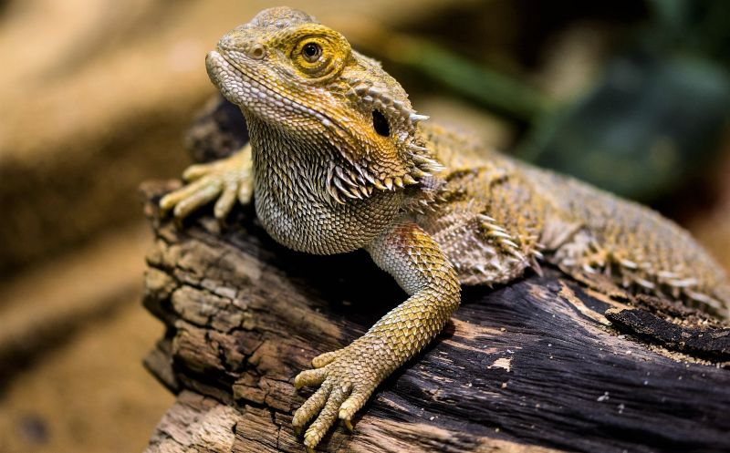
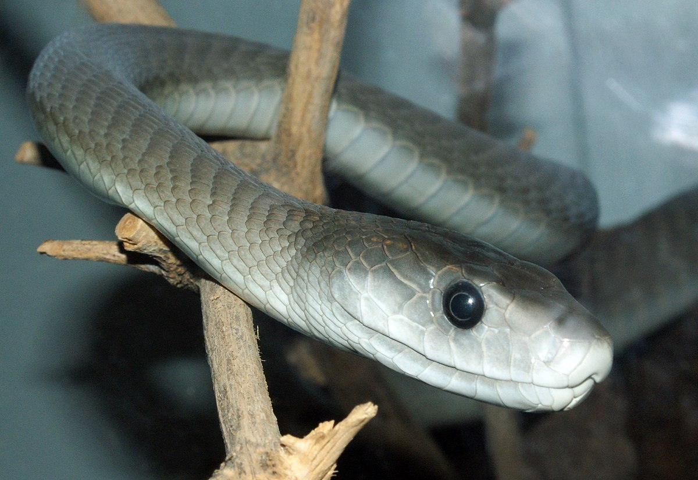
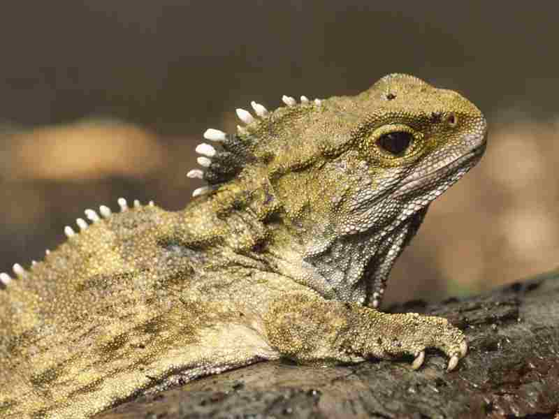
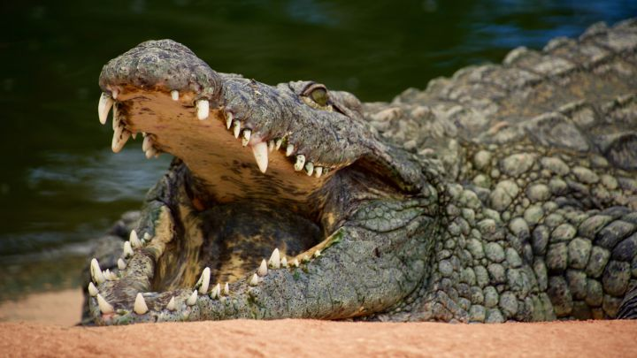

LAGARTOS ESCAMOSOS

Los escamosos (Squamata) son un orden de saurópsidos (reptiles) diápsidos que incluye los lagartos, camaleones,
iguanas y formas afines, las serpientes y las culebrillas ciegas. Evolutivamente, es el orden más reciente de reptiles.
Son también los reptiles actuales que han alcanzado mayor éxito ecológico y los que más especies incluye, con casi 8000.
Caracteristicas:
Los escamosos se caracterizan por la muda de su piel.
Poseen dos órganos de Jacobson de estructura compleja y de gran importancia funcional.
Se trata de estructuras huecas en forma de bóveda situadas en la zona anterior del paladar comunicadas con la cavidad bucal por medio de un estrecho conducto.
Regresar al menú
MAMBA NEGRA "Dendroaspis Polylepis"

La mamba negra es una serpiente propia de la familia Elipidae.
Esta familia se caracteriza por ser la propia de serpientes venenosas, siendo, la mamba negra, una de las especies más venenosas del continente africano.
Pero esta tiene muchas más características que sorprenden a la mayoría de personas.
Caracteristicas:
- Una de las serpientes más rápidas del mundo, siendo capaz de desplazarse a una velocidad de 20 km/h, cualidad que utiliza a su favor para la caza.
- Es una serpiente de comportamiento tímido y solitario.
- También es muy territorial, por lo que se muestra agresiva cuando algún extraño invade su territorio o se siente amenazada.
- La mamba negra no ataca una sola vez, sino que, ataca varias veces de forma seguida y rápida en función del tamaño de su presa, inyectando en cada mordedura su letal veneno hasta conseguir la paralización o muerte del individuo.
- La postura que adopta en estos casos consiste en elevar su cabeza a la mayor altura que la sea posible y desplegar un capuchón que tiene en los laterales de su cabeza, similar a las cobras, para simular que su tamaño es mayor.
Regresar al menú
Tortuga

Las tortugas o quelonios son un grupo de reptiles de hábitat acuático y terrestre.
Su principal característica es poseer un fuerte caparazón que les protege los órganos internos y que abarca todo el torso del animal.
Diseñado como una caja resistente y fabricado de hueso y cartílago, este caparazón crece junto al animal y forma parte de su propia columbra vertebral, de modo que puede refugiarse dentro.
Caracteristicas:
- Son reptiles, o sea, vertebrados de sangre fría y reproducción ovípara, cuyos cuerpos consisten en un gran caparazón, una cabeza, una cola pequeña y cuatro extremidades, que son patas en las tortugas terrestres y aletas en las acuáticas.
- Carecen de dientes en la mandíbula, en su lugar tienen un pico correoso de queratina, afilado y en ocasiones dentado.
- Poseen una buena visión, que privilegian por encima del resto de sus sentidos, aunque también empleen a menudo el olfato y el oído. Poseen un sistema nervioso superior, como todos los animales vertebrados, con un cerebro y una médula espinal.
- A excepción de las tortugas acuáticas bajo el agua, se trata de animales parsimoniosos y no muy ágiles. Sus lentos metabolismos les proveen de una vida larga, alcanzando en algunas especies el siglo de vida.
Regresar al menú
Tuatara (Rhynchocephalia)

Son reptiles endémicos de las islas aledañas a Nueva Zelanda, pertenecientes a la familia Sphenodontidae.
El significado de su nombre común proviene del maorí y quiere decir espalda espinosa. A primera vista por convergencia evolutiva son parecidas a las iguanas, con las que, sin embargo, no están emparentadas.
Miden unos 70 cm de longitud y son insectívoros y carnívoros.
Caracteristicas:
- Miden unos 70 cm. de longitud y su cuerpo tiene una coloración marrón más clara hacia la región ventral.
- Los tuátaras son los reptiles diápsidos más antiguos que sobreviven. Entre los numerosos caracteres que se han conservado sin modificar durante 200 millones de años se hallan dos fosas temporales completas, un ojo pineal bien desarrollado, las vértebras de tipo anficelo con intercentros.
- Es el único reptil actual que carece de órgano copulador.
- Uno de los pocos rasgos especializados son los dientes anteriores, grandes y muy agudos.
Regresar al menú
Cocodrilo (crocodylia)

Un animal cuya imagen provoca gran miedo, respeto y admiración es el cocodrilo, debido a su imponente físico y a su gran mandíbula.
Aunque parezcan animales lentos, son realmente aterradores y lo cierto es que se cobran algunas vidas allí donde habitan, gracias a su capacidad para cambiar de hábitats.
Caracteristicas
Pueden llegar a pesar hasta 800 kg y 6 metros de largo.
Poseen una piel muy gruesa y rugosa, no obstante, los cocodrilos tienen una gran sensibilidad.
Son animales que están adaptados para la vida acuática, ya que sus fosas nasales están creadas para impedir la entrada de agua a los pulmones durante la inmersión
Los cocodrilos, como todos los reptiles, no generan calor mediante su metabolismo, por lo que deben regular su temperatura mediante su posición respecto del sol o mediante la apertura o cierre de sus grandes mandíbulas.
Regresar al menú